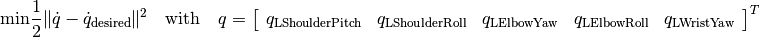

Self-collision avoidance¶
NAOqi Motion - Overview | API
What it does¶
The goal of this function is enabling the robot to become aware of his body. You can program motion without worrying about taking in account his anatomy. The robot always knows where are his head, torso, legs and arms, so he avoids limbs collision during motion.
How it works¶
This section presents how collisions are modelled, detected and avoided.
Modelling of collision on the robot’s body¶
For reason of CPU consumption, we simplify the robot’s geometry, approximating it with simple 3D shapes: spheres (in green in the image below) and capsules (in red). Typically, spheres are used for the head, hips and torso, and capsules for the arms and legs.
{kind=link}
A sphere is simply characterized by its center and radius: it is the set of all points which are at the radius distance of the sphere center.
A capsule is a cylinder, capped by two half spheres, one at each extremity, with the same radius as the cylinder. The capsule is characterized by its center, its length of the cylinder (L), and its radius (R), which is the same for the capping spheres and the cylinder.
Collision detection¶
Collision detection between spheres¶
To detect if two spheres collide, we measure the distance D between the two sphere centers. If D - (r1 + r2) > 0, where r1 is the radius of the first sphere and r2 is the radius of the second one, then the spheres are not colliding. Else, they are colliding.
{kind=link}
Collision detection between a capsule and a sphere¶
To detect collision between a capsule and a sphere, we project the sphere center on the axis of the capsule. Again, there are two cases:
- case 1: the projection of the sphere center is inside the capsule cylinder. Here, we consider the distance D between the sphere center and its projection on the capsule axis.
- case 2: the projection of the center is outside the capsule cylinder. Here, we consider the distance D between the sphere center and the closest capsule cylinder extremity.
In both cases, if D - (rC + rS) > 0, where rC is the radius of the capsule and rS the radius of the sphere, there is no collision.
{kind=link}
Collision detection between capsules¶
To detect collision between two capsules, the capsules are reduced to two axes. Two cases are then possible:
- case 1: the intersection of the axes is inside the first capsule. Here, the distance between the closest points is D, indicated on the drawing: if it is greater than r1 + r2, then there is no collision.
- case 2: the intersection of the axes is outside the capsules. Here, the closest points are the extremities of the capsules. If the distance D between them is greater than r1 + r2, then there is no collision.
{kind=link}
Collision avoidance¶
Introduction¶
This section presents how the algorithm avoids collision between the protected chains and the rest of the robot’s body. The aim of the algorithm is to prevent collisions from happening, but also finding an alternate way of satisfying the command, if possible.
To try to satisfy the command, we must minimize the distance between the current state and the desired one. We also have a given constraint: no collision must take place. To solve this, we can formalize the problem as a minimization problem under a linear inequality constraint.
We are going to illustrate this problem with a arm / torso collision, but the following equations are general. The following illustration shows the left arm chain near the torso.
{kind=link}
Optimization¶
In the case of a command affecting the arm, what we want to minimize is the difference between the desired state and the final one, which gives the following equation:

Note
This equation is valid for a T14 (Academics model) robot. In the case of a H21 robot model (Robocup model), the last angle is not present since the robot does not have this degree of freedom. However, the equations are unchanged.
Constraint¶
We now have to express the fact that we do not want the arm to collide with the rest of the body. We will consider here only the torso for simplicity, but the reasoning is strictly the same for any other body part.
We consider the speed of the extremity of the arm. Since the interpolation is discretized, to ensure that there will be no collision, we have to ensure that at the next movement step, the distance covered will be less than the distance separating the arm and the torso. The distance is computed using the models described in the previous section.
To predict the distance covered, we first compute the Cartesian speed vector along the contact normal. The Cartesian speed vector can be obtained with the following formula (Jchain is the Jacobian of the nearest point to the torso):
If we project this Cartesian speed along the contact normal n, and multiply this by the time step, the non collision can be expressed as follows:
Note
The time step is at least equal to the threading time of motion.
We can then rewrite the above expression to obtain a classical inequality constraint:

Conclusion¶
We have then formalized the problem as a minimization with an inequality constraint. This problem is now a classical optimization problem with the linear inequality constraint:
With this algorithm, the robot can avoid collisions with itself. When the desired position is unreachable, it tries to find the nearest solution, while still guaranteeing the absence of collision.
Getting started¶
Collision detection and avoidance can be activated on the following chains: “Arms”, “LArm” or “RArm”. It detects and avoids collisions between these chains and the rest of the body.
In the case where the protected chain has no stiffness, the algorithm will try to move the parts of the robot’s body which are stiff. If the chain is stiff, the algorithm will modify its movement.
Warning
Collision detection and avoidance only works for Joint methods but not for Cartesian and Whole body methods. It also works when making the robot move from Choregraphe using the Timeline, or the sliders (when clicking on a body part of the robot).
Use case¶
Example showing the effect of collision detection: the robot bumps his chest with his left arm with collision detection enabled or disabled.
almotion_reflexesCollisionAvoidance.py
#! /usr/bin/env python
# -*- encoding: UTF-8 -*-
"""Example: Use setCollisionProtectionEnabled Method"""
import qi
import argparse
import sys
import time
import motion
def main(session):
''' Example showing the effect of collision detection
Nao bumps his chest with his left arm with collision detection enabled
or disabled.
'''
# Get the service ALMotion.
motion_service = session.service("ALMotion")
model_service = session.service("ALRobotModel")
# Get the robot configuration.
if model_service.getRobotType() != "Nao" or not model_service.hasArms():
print "This test is not available for your Robot"
print "---------------------"
exit(1)
pChainName = "LArm"
hasHands = model_service.hasHands()
# Send robot to Pose Init.
moveLArm(motion_service, hasHands, "Init")
# Disable collision detection on LArm chain.
pEnable = False
success = motion_service.setCollisionProtectionEnabled(pChainName, pEnable)
if (not success):
print("Failed to disable collision protection")
time.sleep(1.0)
# Make NAO's arm move so that it bumps its torso.
moveLArm(motion_service, hasHands, "Final")
time.sleep(1.0)
# Go back to pose init.
moveLArm(motion_service, hasHands, "Init")
# Enable collision detection on chainName.
pEnable = True
success = motion_service.setCollisionProtectionEnabled(pChainName, pEnable)
if (not success):
print("Failed to enable collision protection")
# Make NAO's arm move and see that it does not bump on the torso.
moveLArm(motion_service, hasHands, "Final")
time.sleep(1.0)
# Go back to pose init.
moveLArm(motion_service, hasHands, "Init")
def moveLArm(motion_service, pHasHands, pPose):
''' Function to make NAO bump on his Torso with his left arm '''
# Define the name of the chain controlled
pChainName = "LArm"
# Define the final position.
if (pPose == "Init"):
pTargetAngles = [
80, # LShoulderPitch
20, # LShoulderRoll
-80, # LElbowYaw
-60] # LElbowRoll
elif (pPose == "Final"):
pTargetAngles = [
50, # LShoulderPitch
6, # LShoulderRoll
0, # LElbowYaw
-150] # LElbowRoll
else:
print "ERROR: Your pose is unknown"
print "---------------------"
exit(1)
# Set the target angles according to the robot version.
if pHasHands:
pTargetAngles += [0.0, 0.0]
# Convert to radians.
pTargetAngles = [x * motion.TO_RAD for x in pTargetAngles]
# Set the fraction of max speed for the arm movement.
pMaxSpeedFraction = 0.5
# Set NAO in stiffness On.
motion_service.setStiffnesses("LArm", 1.0)
# Move the arm to the final position.
motion_service.angleInterpolationWithSpeed(pChainName, pTargetAngles, pMaxSpeedFraction)
if __name__ == "__main__":
parser = argparse.ArgumentParser()
parser.add_argument("--ip", type=str, default="127.0.0.1",
help="Robot IP address. On robot or Local Naoqi: use '127.0.0.1'.")
parser.add_argument("--port", type=int, default=9559,
help="Naoqi port number")
args = parser.parse_args()
session = qi.Session()
try:
session.connect("tcp://" + args.ip + ":" + str(args.port))
except RuntimeError:
print ("Can't connect to Naoqi at ip \"" + args.ip + "\" on port " + str(args.port) +".\n"
"Please check your script arguments. Run with -h option for help.")
sys.exit(1)
main(session)